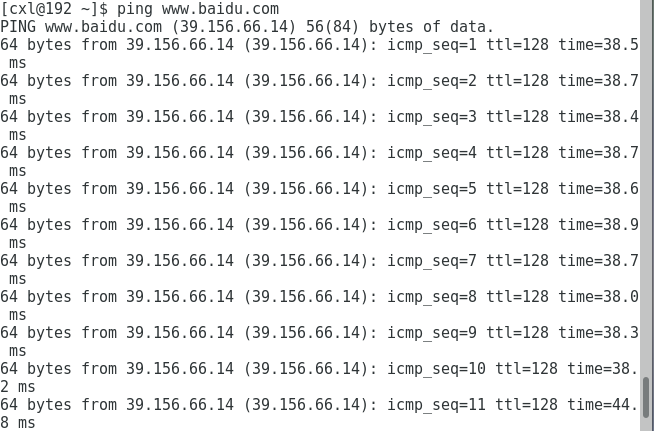
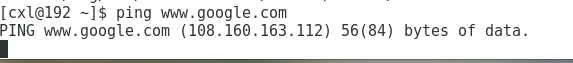
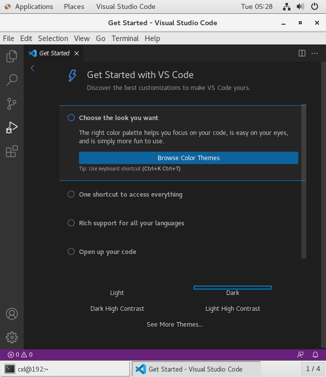

这里我用到的是 VMware 虚拟机 +CentOS7 64 位的环境搭建的 Linux 系统
在安装好虚拟机后，作为编程人我们肯定首先是下载最好的编辑器 VScode。
在一番查找攻略之后，发现只需要一行代码就可以下载 VScode, 但是运行代码之后发现报错：
Linux: 'Username' is not in the sudoers file. This incident will be reported
经过一番查找发现，是没有把自己的用户名添加到配置文件当中：
打开文件
su root | |
nano /etc/sudoers | |
```awk | |
然后像下面的语法一样在管理员用户下面添加用户。 | |
```awk | |
user_name ALL=(ALL) ALL |
然后按 Ctrl+X 保存。
我们重新下载，发现下载速度极慢；
这是为什么呢？最初我怀疑是虚拟机可能没有网络环境，于是我 ping 了一下百度：

但是显示是可以 ping 的通的，于是我又 ping 了一下谷歌：

果然是 ping 不通的。虽然我采用了科学上网，但是很明显虚拟机是没有翻出去的，那怎么办呢？我们就需要换源：
# 1. 安装 wget
type wget | |
# 如果找不到 wget 命令，需要先安装 | |
yum -y install wget |
# 2. 备份
mv /etc/yum.repos.d/CentOS-Base.repo /etc/yum.repos.d/CentOS-Base.repo.backup |
# 3. 下载
# CentOS 7 | |
wget -O /etc/yum.repos.d/CentOS-Base.repo https://mirrors.aliyun.com/repo/Centos-7.repo | |
# CentOS 8 | |
wget -O /etc/yum.repos.d/CentOS-Base.repo https://mirrors.aliyun.com/repo/Centos-8.repo |
# 4. 生成缓存
# 清除缓存 | |
yum clean all | |
# 生成缓存，建立元数据 | |
yum makecache |
因为我这里用的是 CentOs, 所以使用以下命令安装 vscode:
对于 centos 则如下：
sudo rpm --import https://packages.microsoft.com/keys/microsoft.asc | |
sudo sh -c 'echo -e "[code]\nname=Visual Studio Code\nbaseurl=https://packages.microsoft.com/yumrepos/vscode\nenabled=1\ngpgcheck=1\ngpgkey=https://packages.microsoft.com/keys/microsoft.asc" > /etc/yum.repos.d/vscode.repo' |
然后用 yum 命令安装
yum check-update | |
sudo yum install code |
完成后，就可以用 code 命令来打开 vscode 了
